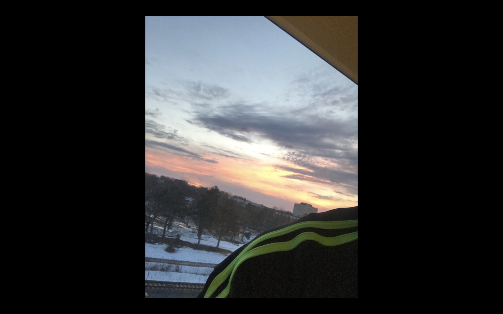
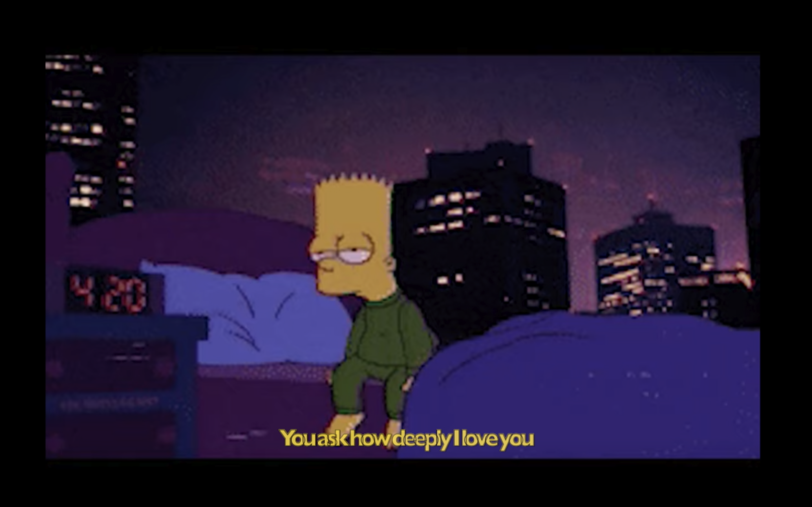

비와 당신 (The Rain and You) - 박중훈 Cover by. Kun
398K views · 5 months ago
-
너무 아픈 사랑은 아니었음을 (Love that is too panful wasn't love) - 김광석 Cover by. Kun Kun Lee 137K views
-
 괜찮아 사랑이야 (It's alright, it's love) - 다비치 Cover by. Kun Kun Lee 273K views
괜찮아 사랑이야 (It's alright, it's love) - 다비치 Cover by. Kun Kun Lee 273K views -
월량대표아적심 月亮代表我的心 (The Moon Represents My Heart) - Teresa Teng Cover by. Kun Kun Lee 210K views